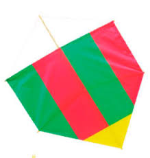

A historia da pipa
Uma pipa, também conhecida como papagaio em algumas regiões, é um brinquedo
tradicional que voa ao sabor do vento, sustentado por uma linha.
Geralmente feita de papel, plástico ou tecido leve esticado sobre uma estrutura de madeira,
a pipa é empinada em áreas abertas, onde o vento pode elevá-la com facilidade
Histórias sobre pipas remontam a séculos, com origens atribuídas à China antiga,
onde eram usadas para diversos fins, desde comunicação até
festividades. Hoje, soltar pipa é uma atividade recreativa popular em muitos países, proporcionando
momentos de diversão e relaxamento ao ar livre.
As pipas vêm em diversas formas e tamanhos, desde os modelos simples, em formato
de losango, até as versões mais elaboradas, que imitam animais,
dragões ou personagens de fantasia. Para os entusiastas, construir e decorar uma pipa é parte essencial
da experiência, permitindo criatividade e expressão pessoal.